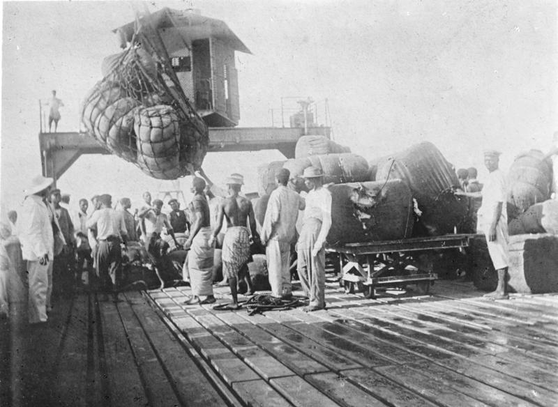
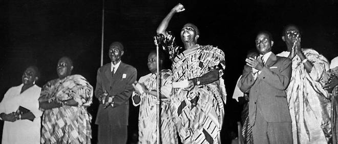
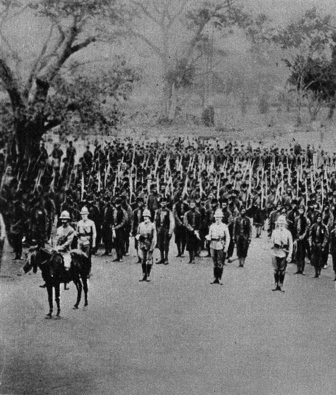

L'histoire du Togo a été marquée par la présence des Portugais sur la côte au XVIè siècle, avec l'installation d'un comptoir à Porto Seguro., Colonie allemande dès 1884, le Togo est partagé, après la première guerre mondiale, en deux parties:une partie se trouvera ainsi, en 1922, placée sous mandat de la France, tandis que l'autre, placée sous tutelle de la Grande-Bretagne, sera rattachée à l'ancienne colonie britannique de la Gold-Coast, devenue indépendante en 1957. Le territoire du Togo français a acquis son indépendance en 1960

Histoire du Togo (Robert CORNEVIN) Paris Berger-Levrault, 1962 Cameroun, Togo: territoires sous tutelle (Jean-Claude FROELICH) Berger-Levrault, 1956

Les études préhistoriques restent encore insuffisantes et ne sont pas encore assez nombreuses, pour permettre de faire précisément un lien avec les cultures voisines. Cependant, on a réussi à retrouver de nombreuses traces d'anciens fourneaux ainsi que de scories permettant d'affirmer l'intensité de l'activité métallurgique dans le centre. De plus, on sait que les forgerons exportaient le fer extrait des minerais de la région jusqu'à la ville de Kano au Nigeria. Quelques-uns de ces hauts-fourneaux mesuraient jusqu'à trois ou quatre mètres de hauteur, servant aux Bassari à réduire le minerai de fer afin de fabriquer des outils et des armes qu'on utilisait encore à la veille de l'indépendance.

Dès cette époque commencent les missions catholiques auxquelles les protestants ne réagissent qu'au xviie siècle. Puis, les Portugais pratiquent rapidement un commerce actif et la traite négrière se développe le siècle suivant, autour du comptoir nommée Petit-Popo (actuel Aného). Au xviiie siècle, les Danois venus de Christianenborg (l'actuelle Accra), s'implantent à leur tour. Ils sont suivis, à partir des années 1780-1800, par des groupes de Hollandais, par de nombreux « Brésiliens », des anciens esclaves libérés et rapatriés du Brésil ou des descendants de Portugais installés au Togo, qui participent aux échanges côtiers. Francisco Félix de Sousa, important trafiquant d'esclaves brésilien, qui s'établit à Petit-Poto (futur chacha du Dahomey, l'actuel Bénin), fait fortune dans le commerce du tabac, du rhum, des tissus et dans la traite des esclaves. En 1880, le Togo actuel n'existe pas encore. Les Britanniques et les Français, occupant respectivement la «Gold Coast» (actuellement le Ghana) et le Dahomey (actuellement le Bénin), installent des postes douaniers à leurs frontières, d'où ils tirent l'essentiel de leurs ressources, prélevées sur des produits tels le tabac et l'alcool. En 1883, le chancelier allemand Bismarck décide d'imposer un protectorat sur le Togo. L'empire allemand est bien décidé à tirer profit de l'action des missionnaires protestants de la mission de Brême pour disposer d'un empire colonial,comme la France, l'Angleterre ou le Portugal. Malgré de nombreux décès, ces missionnaires de brême ont installé dès 1853, puis en 1857, des points d'implantation chez les Ewes Anlo, à Keta et à Anyako, puis, en 1855 et 1859, chez les Ewes Adaklou et les Ewes Ho. En 1884, l'explorateur allemand Gustav Nachtigal signe un «traité de protectorat» le 5 juillet 1884 sur la plage de Baguida, avec le chef du lac Togo, Mlapa III de Togoville, représentant l’autorité religieuse du Togo, qui donna son nom au pays. C'est en 1885, lors de la conférence de Berlin qui délimite les zones d'influence économiques européennes en Afrique, que la côte togolaise est officiellement attribuée à l'Allemagne (Togoland). Le gouvernement de Berlin, dans le cadre d'un négociation bilatérale avec la France, reconnaît, par une convention du 24 décembre 1885, les droits français sur le territoire de la future Guinée française en échange de l'abandon par la France à l'Allemagne des villages de Petit-Popo et de Porto-Seguro, sur la côte des Esclaves. Comme les autres puissances coloniales de l'époque, l'Allemagne s'empresse de faire valoir ses droits sur l'arrière-pays. Ainsi elle annexe rapidement, en à peine quelques années 85 000 km² de territoires. Les Allemands fondent le port de Lomé et mettent en place une économie de plantations, en particulier dans la région de Kpalimé, propice à la culture du cacao et du café. Allée menant au palais du Gouverneur (1904) Mais, l'arrivée des Allemands se heurte à une forte résistance de la part des Africains. Des accords sont signés avec certains royaumes. Par contre, la révolte des Kabyé (1890) et celle des Konkomba (1897-1898) furent matées violemment. Les révoltes ne cessent d'augmenter en intensité, lorsque les occupants allemands s'enfoncent à l'intérieur des territoires du Togo. L'Allemagne encourage ses citoyens à s'installer dans la colonie togolaise appelée le Togoland, en leur offrant des concessions à des conditions très avantageuses. Elle fait également construire les infrastructures nécessaires à l'exploitation du Togo, comme des lignes de chemin de fer, en recourant massivement aux travaux forcés. Les Allemands en font une Musterkolonie (de) (une « colonie modèle ») où doivent régner l'équilibre, la prospérité et la bonne gestion, mais où la langue allemande n'est pas imposée aux populations locales. La politique coloniale allemande est fondée, en dernier ressort, sur la conviction que les races sont différentes et que la race blanche est supérieure aux autres. Les Allemands ne doivent donc pas considérer l’indigène comme leur frère noir, dans cette logique. En matière de formation scolaire, le Togo allemand met en place des écoles gérées par des missions catholiques et protestantes. Vers, 1910, le pays compte 163 établissements scolaires évangéliques et 196 catholiques. Les catholiques aont créé aussi un centre de formation pour les enseignants. Les missionnaires, tant catholiques que protestants, privilégient également l'enseignement «en langue indigène» pour mieux convertir les «païens» à leur religion. Par exemple, la Mission de Brême assure l'enseignement primaire entièrement en éwé, tandis que la formation supérieure éest surtout dispensée en anglais, très rarement en allemand. Ainsi, dans l'ensemble, les missionnaires n'imposent jamais la langue allemande. L'influence de la langue allemande demeure presque nulle chez les Togolais. Les missionnaires de Brême favorisent aussi l'émergence d'une littérature en langue ewé. En 1914, aucune langue africaine ne peut faire état d'une littérature imprimée aussi abondante que l'éwé. Les autorités allemandes tentent bien d'organiser le partage de la nouvelle colonie entre les missions chrétiennes et de n'autoriser que la présence de missionnaires de nationalité allemande, mais elles se désintéressent rapidement de la question scolaire. En 1913, on ne compte que quatre écoles publiques (Regierungschulen), qui rassemblent 341 élèves, comparativement à 348 écoles confessionnelles qui en reçoivent plus de 14 000. Après le début de la Première Guerre mondiale, une opération conjointe franco-britannique force les Allemands, retranchés à Atakpamé (capitale de la région des Plateaux), à capituler dès le mois d'août 1914. Le gouverneur allemand Adolphe-Frédéric de Mecklembourg (1912-1914) dut quitter le Togo, de même que le vicaire apostolique, Mgr Wolf (qui reste de jure en poste jusqu'en 1921). Lire plus